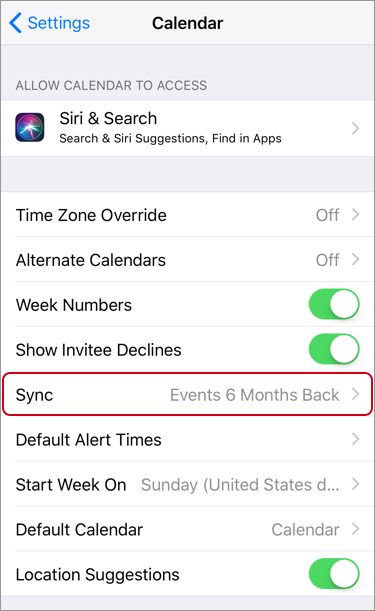

Help
Data was lost
If you are using Cloud's calendar, you can restore the data in most cases by changing the synchronization period.
No Calendar
See Calendar has disappeared.
No Data of Several Months Ago
Check the synchronization settings of calendars.
- Open "Settings" on your iPhone
- Tap "Calendar"
- Change "All Events" on Sync
- Open the "Calendar" app of iPhone, and wait for data to be synchronized

References